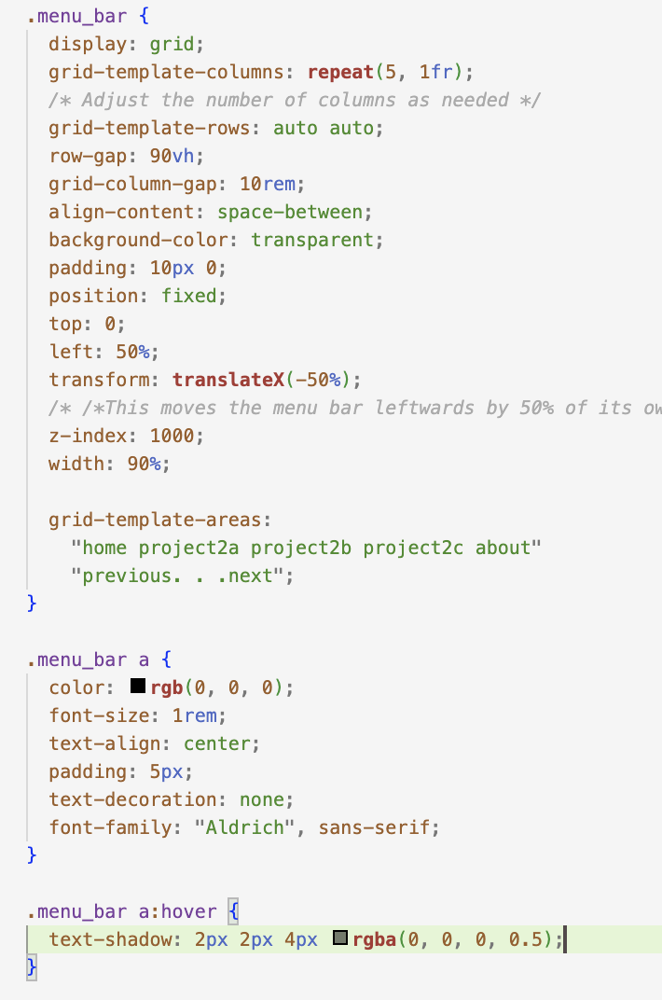

In project 2C, I mainly want to build my website through the Grid method. Before, I relied more on the two modes of flex and block. However, both of these have certain limitations. The grid method can quickly lay out the overall layout and is responsive. I mainly arrange it through the grid-template-areas tag. The most important thing is to set a class for each element and then map it to the grid.
The "Optics in Light Sculptures" project on Instructables combines
artistic expression with
the
scientific exploration
of light. It involves creating sculptures that manipulate light through optical principles like
refraction,
reflection,
and dispersion. Aimed at merging art with science, making the complex science of optics more accessible
and
engaging
through hands-on artistic creation. Each sculpture is constructed using materials such as lenses and
mirrors
to showcase
different properties of light, providing both a visual spectacle and a learning experience.
https://www.instructables.com/Optics-in-Light-sculptures/